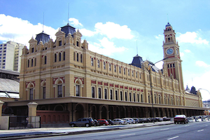

On January 1, 1999, the currency of Portugal changed from the escudo, to the euro. The escudo was not actually removed from circulation until February 28, 2002.
Export from Portugal is rapidly growing with products such as wine, cheese, cork, wood, textiles and plastics.

The Portuguese view the character of a person as highly important, and prefer to do business with someone that they know. It is not uncommon for a business meeting with someone new to begin with a great deal of general chit chat. It is important that you wait for your Portuguese colleague to bring up business as the process cannot be rushed, and if you try, it may be viewed as being less than sincere and possibly shady. If possible, it is best to find an introduction from someone in common. This will help to ease the transition from stranger to accepted.

If writing to a Portuguese business, it is important that your first correspondence be written in Portuguese and English. Eye contact should be maintained while speaking. You should be on time for meetings (often being 5 minutes late, is considered on time). Although punctuality is a sign of respect, if you are kept waiting, it is important that you do not seem to be irritated, as the respect must be earned. It is also important to understand that decisions are not reached during meetings, so you must not seem overly eager.
Because the Portuguese prefer to do business with someone that they know and trust, nepotism is fully accepted and is a normal way of doing business. Because the Portuguese are a hierarchical society, it is of utmost importance to realize that the person you are having the meeting with, will always defer to the person that is above them, either in age or position. This is a form of respect and one that you will need to be patient with.